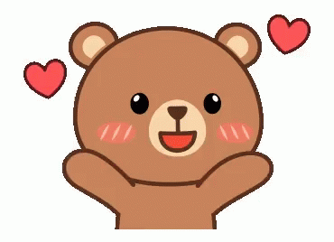

Semua berawal dari sini
Ini sedikit kisahku.. dlm melintasi waktu setelah bertemu denganmu.
maaf jika banyak kata2 kurang tepat.aku orang yg gk pandai dlm menyusun kata
28 Aggustus 2018
Event Karnaval Day, Sejak itu Aku telah menyadari sesuatu hal dalam hidup Yaitu pengalaman, pengalaman yang tidak bisa saya lupakan yang awalnya cuma sekedar kagum hingga membuat aku bersimpati dan menaruh hati.
September 2018
Rasa simpati terus semakin tumbuh. sampai aku hampir sudah tak terkendali. hingga akhirnya Aku berfikir "Apakah aku sedang jatuh cinta??" Aku belum pernah merasakan perasaan ini sebelumnya 'Ah apa yang aku pikirkan dia sudah milik orang.
Love Story
Hidup dalam bayang-bayang.Tetapi siapa yang akan menyalahkan? Tuhankah? Karena memberikan sebuah cinta yang kadang menyakitkan, menyenangkan, melelahkan dan tidak menentu. mungkin disini aku yang salah. Aku yang memulai lebih dulu. yang hanya bisa aku lakukan hanya menanti waktu mengijinkan bertemu.
waktu berlalu semua hanya tentang cerita. Pernah aku mencoba tak pernah nyata hasilnya.
bulan-bulan berlalu. Cerita berubah ketika dia sudah memilikinya. Aku merasa hancur. Benci? 'tidak aku tidak pernah membenci sedikitpun.' Aku hanya sedikit kecewa,karena situasi merubah semuanya. yang hanya aku bisa cuma menanti untuk yang ke duakali.
Terus berusaha untuk melupakan,tanpa komunikasi bersikap cuek dan memblokir semntara semua socialmedia yang ku lakukan,Tapi nyatanya ttep aku gk bisa. Bayang2 masih terus berada di ingatanku. Ohh tuhan apa salahku kenapa kamu berikan cinta yang perih,menyakitkan,bahagia gk menentu seperti ini.September
Tepatnya bulan ini. bulan dimana aku memulainya dan bisa juga untuk mengakhirinya atau aku harap ini bulan awal untuk memulai cerita yang sebenarnya. Itu semua kamu yang menentukanya pilihanmu akan merubah semuanya.
Ohh tuhan.. apa mungkin ini sudah jalan takdirku? mencintai seseorang tanpa bisa kumiliki Jika waktu mengijinkan untuk bertemu kembali. Aku janji akan memberi apapun yg aku mampu untuk di beri dan memanfaatkan momen ini untuk sekedar ucapan perpisahan / menjalin hubungan
Aku gk tau harus ngomong apa lagi, Jika kamu bertanya alasan kenapa dn mengapa aku mencintaimu jujur aku gk tau alasanya. jika aku harus memilih gk pernah menganalmu,lebih baik aku tak pernah bertemu. kamu perlu tau disini masih ada hati yg selalu menunggu
Dua tahun sudah berlalu, Aku hanya habiskan waktu dengan menunggu. Menunggu yg sebenernya Aku gak tau apa pantas untuk ditunggu?
Berapa lama lagi aku harus sabar menunggu, 2 bulan?, 2 tahun? Tetap aja sama perasaan aku tak pernah berubah. Aku sudah mencobnya untuk melupakan tapi itu sulit. kalo di bilang aku bucin banget emang iya aku akui. Tapi yg perlu kamu tau aku bisa bucin karena kamu alasanya.CUMA KAMU ALASANYA
ini mungkin waktu yang tepat untuk menyelesaikan semua. cuma ada 2 pilihan Jika Aku tidak bisa memulai maka aku harus bisa mengakhiri. walapun itu sangat sulit
Ku beranikan hari ini untuk mengungkapkan yang selama ini menjadi resah. Resah jika kamu tak menjadi milikku selamanya. Biarlah yang lalu menjadi masa laluku sedih,sakit,perih,bahagia. namun untuk masa kini maukah kamu menjadi masa depanku? I Miss U
